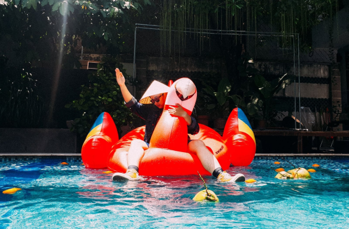
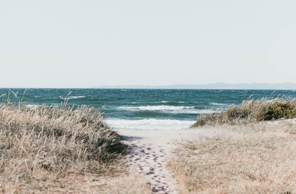

Illustration
Japan House opens in mountainside to foster peak creativity.
Enim omittam qui id, ex quo atqui dictas complectitur. Nec ad timeam accusata, hinc justo falli id eum, ferri novum molestie eos cu.
By Reta Torphy Photography
Photography
Helmut Lang celebrates taxi drivers worldwide in latest campaign
By Alessandra Ortiz Photography
Photography
Bowlcut launch a new summer collection that pays homage to “UK legends”
By Rosanna Ondricka Photography
Photography
Thousands of previously unseen photographs by Andy Warhol will be made public this Autumn
By Annie Lueilwitz Interactive Design
Interactive Design
London-based Yinka Ilori's storytelling furniture
By Annie Lueilwitz Graphic Design
Graphic Design
Anonymous Israeli art collective Broken Fingaz direct music video for U2 and Beck
By Simeon Brekke Architecture
Architecture
Suzanne Saroff's meticulously arranged photographs alter perceptions
By Reta Torphy
Illustration
Japan House opens in mountainside to foster peak creativity.
By Reta Torphy
Photography
Helmut Lang celebrates taxi drivers worldwide in latest campaign
By Alessandra Ortiz
Photography
Bowlcut launch a new summer collection that pays homage to “UK legends”
By Rosanna Ondricka
Photography
Thousands of previously unseen photographs by Andy Warhol will be made public this Autumn
By Annie Lueilwitz
Interactive Design
London-based Yinka Ilori's storytelling furniture
By Annie Lueilwitz
Graphic Design
Anonymous Israeli art collective Broken Fingaz direct music video for U2 and Beck
By Simeon Brekke
Architecture
Suzanne Saroff's meticulously arranged photographs alter perceptions
By Reta Torphy Graphic Design
Graphic Design
Anu Ambasna's playful illustrations celebrate club culture, brown bodies and perfect paunches
By Leo Bartell Graphic Design
Graphic Design
A Brief History of the FIFA World Cup Logo
By Clem Onojeghuo

Graphic Design
Need a guide to LA’s graphic design scene? Shoplifters’ new issue has got your back
By Alessandra Ortiz

Photography
Fred Rowson directs film for Years and Years
By Coby Gottlieb Illustration
Illustration